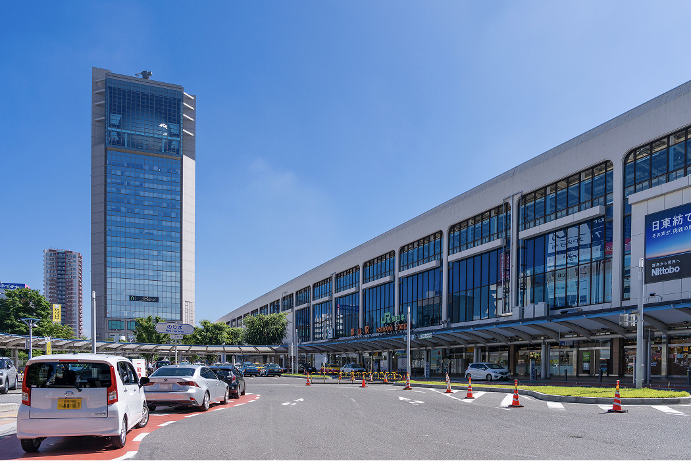
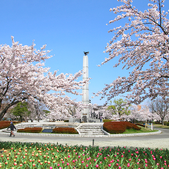
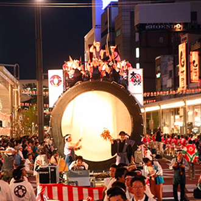
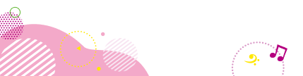
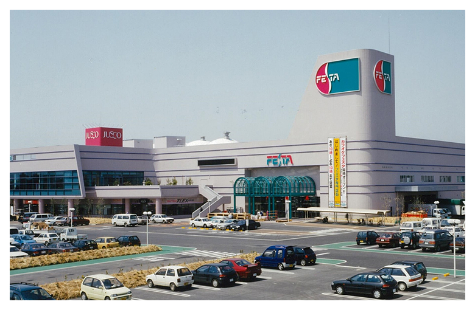

イオンモール郡山
2027 年 春 オープン予定
RECRUIT 求人情報
イオンモール郡山を、
私たちと一緒に盛り上げませんか？
ファッションからグルメまで、多彩なショップが勢ぞろい。 オープニングスタッフとして一緒に働きましょう！
※2026年秋頃より順次掲載予定
CITY PROFILE 郡山市について

福島県の中央部に位置する郡山市は、人・モノ・情報が行き交う東北有数の商工業都市として、確かなにぎわいと成長を続けています。
また、「共働き子育てしやすい街ランキング2025」において、東北1位に選ばれるなど、三世代が安心して暮らせる環境が整っています。
パパ・ママにも優しい独自支援がたくさんあり、仕事・育児の両立を支え、地域全体で子育てを支援しています。


共に「選ばれるまち」を
めざして
郡山市イメージキャラクター
がくとくんとおんぷちゃん

ABOUT US ショッピングモールフェスタ 〜 紡がれる時間、繋がる想い 〜

1996年4月、「郡山市の豊かな自然環境とも調和した複合型ショッピングセンター」を開発コンセプトに、地元商業者の手によって地域の皆さまによる協力をいただきながらショッピングモールフェスタが開業。
27年間に亘り、多くの皆さまにご愛顧いただきました。
かたちは変わっても
皆さまと一緒に過ごした大切な記憶を紡ぎ
27年分の感謝を込めて
またここから、皆さまと一緒に、
新しい思い出を
ひとつずつ刻んでいけることを楽しみに
イオンモール郡山では、子育てファミリー、多世代が交流できる地域コミュニティの場づくりを目指してまいります。